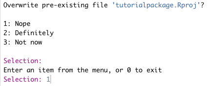
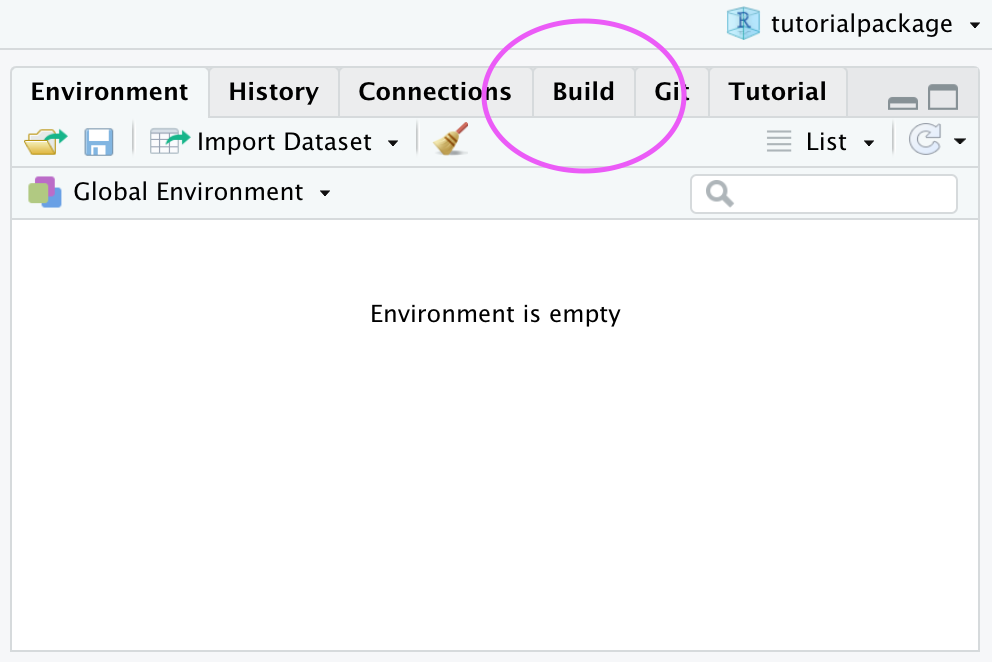
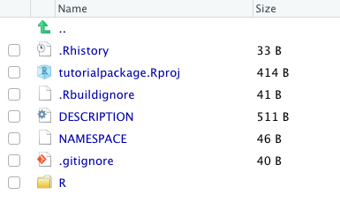
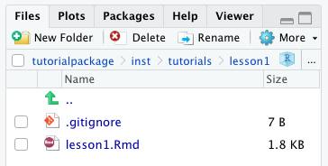

learnr occasion
Packages are not just for functions and data– you can create a package to deliver interactive tutorials to an audience, too! If you want to share your learnr tutorial with a large group of users (e.g. large courses where many students will likely run the same tutorials simultaneously), putting your tutorial inside of a package may actually be one the best ways to get your content to your audience. Why? Because after the package has been installed and loaded, users can run your tutorial locally– which means that you don’t have to worry about potential bandwidth limits and issues that might otherwise arise when learnr tutorials are hosted on external servers.
Putting your learnr tutorial in a package is also free– and always will be, which means you can also sidestep costs associated with hosting services! Your package doesn’t have to be on CRAN, and it doesn’t have to contain functions or data (but it can if you want!).
Never made a package before? No sweat! This post will guide you through.
We will walk through the steps for creating the bare-minimum package that you can use to house and deliver your interactive learnr tutorials to your users.
Our final goal is to create a package that is “downloadable” by users, which means this package needs a GitHub repository so that it can be easily shared. If students wanted to, they’d be able to find the source code and solutions in your GitHub repository (or, with some spelunking, in the folder that houses all their R packages locally). But this would take some extra effort on the part of students.
If a solution like this still works for your purposes, then read onwards!
We assume the following:
Let’s make sure we have all the pieces in place to create a learnr tutorial package.
Make sure you’ve installed and loaded the following packages:
#install.packages(c("usethis", "devtools", "roxygen2"))
library(usethis)
library(roxygen2)
library(devtools)
library(learnr)
If you’re already familiar with the ins and outs of connecting an R Project to a GitHub repository, you can skip this section.
We recommend following the tips on Happy Git with R and starting in GitHub before switching to RStudio.
Create a new repository on GitHub for your work.
Copy the repository URL to your clipboard.
Do this by clicking the green Clone or Download button.
Copy the HTTPS clone URL (looks like: https://github.com/{yourname}/{yourrepo}.git).
Or, copy the SSH URL if you chose to set up SSH keys (looks like: git@github.com:{yourname}/{yourrepo}.git).
Open RStudio and create a new RStudio Project via git clone.
Do this by clicking File > New Project > Version Control > Git.
Paste the copied URL.
Be intentional about where you tell RStudio to create this new Project.
Click Create Project.
Now we’ll create the infrastructure to turn this R project into a package. A handful of new files need to be created, but luckily we can outsource this heavy lifting to the create_package() function from the usethis package.
Create the necessary package infrastructure when you run:
usethis::create_package(getwd())The console output will ask if you’d like to overwrite the pre-existing R project. Select No.

A second session of RStudio will open – this session has a Build tab in the pane which also has the tabs Environment, History, etc. This tab is specific for building packages, and we will use it later. You can close the first RStudio instance.


Now that the package structure is in place, it’s time to add tutorial content. Again, the usethis package will do the dirty work for us to create the folders and files we need for a learnr tutorial within our package.
Create the learnr tutorial and open it for editing when you run usethis::use_tutorial("<name-of-learnr-file>", "<Title You'd Like the User to See>"):
usethis::use_tutorial("lesson1", "Your First Lesson", open = interactive())The first argument is the basename for the learnr R Markdown file you are creating. You do not need the .Rmd file extension here.
The second argument is what you want the user-facing title of the tutorial to be.
This creates an inst/ directory with some subfolders. If you’re not new to creating learnr tutorials, the folder structure here will look familiar to you – there’s nothing different about learnr tutorial directories inside and outside of packages.
You can open up inst/ and its subsequent subfolders until you reach the .Rmd file you created:
/inst/tutorials/<name-of-learnr-file>/<name-of-learnr-file.Rmd>
Edit the open .Rmd file and customize your tutorial as you normally would.
Repeat for each additional tutorials you want to include in this package.
Time to build the package and install it in your R system library.
Navigate to the Build pane of your RStudio IDE. Then click Install and Restart. Alternatively, run:
devtools::install()Believe it or not, you’ve now made a package with a learnr tutorial inside!
You should test that your package has been properly created by calling the function that will load your tutorial from your installed package:
Run your tutorial with learnr::run_tutorial("<tutorial-name>", "<package-name>").
learnr::run_tutorial("lesson1", "tutorialpackage").Rmd basename, not the user-facing title.
If your tutorial includes exercises that can be checked via an external package (like gradethis, for example), you’ll need to make sure this package gets installed along with your custom package. To do this, the external package needs to be added as an Imports dependency in the DESCRIPTION file. Once again, the usethis package will make this easier for us to do:
Run usethis::use_package("<external-package>")
usethis::use_package("gradethis")You can confirm the package has been added as an import when you open the DESCRIPTION file in your project root.
** TO-DO: figure out what to do about NAMESPACE. Otherwise will get
Quitting from lines 8-10 (lesson1.Rmd)
Error: 'gradethis_setup' is not an exported object from 'namespace:gradethis'when creating this package with tutorials containing the setup for gradethis.
This step is not necessary to have a working, usable package, but it creates a nicer experience for users interested in learning more about the contents of your package and how to use them.
Open the DESCRIPTION file in your project root.
Edit the file with your own information. Not sure what to write for each field? See this resource for suggestions.
Finally, make sure to Build > Install and Restart your package again to include these changes.
Your tutorial package has (finally!) been built, now it’s time to get it out there!
Commit and push to GitHub to share your tutorial package with the world.
Have users install your package from GitHub with remotes::install_github(“<your-repo>/<package-name>")
remotes::install_github("dcossyleon/tutorialpackage")Have users run your tutorial with learnr::run_tutorial("<tutorial-name>", "<package-name>") (users will need to install the learnr package first).
learnr::run_tutorial("lesson1", "tutorialpackage")We recommend including these latter two instructions in a README file, which we introduce below.
You can include additional information in a README.Rmd file for your package. At a minimum, we recommend you include a line about how users can install and load the tutorials.
Run use_readme_rmd() to create and open a README file.
use_readme_rmd()Edit the file to meet your needs. Need ideas of what to include? Check out this resource.
Click Knit so that it creates a corresponding README.md file.
Or, alternatively, run:
usethis::build_readme()Commit and push your changes to GitHub.
After your package has been installed by your users, you can continue to update or add tutorials. Each time you make changes to the contents of your package, you must Build then Install and Restart the package locally before pushing your changes to GitHub.
Users can then access the updated content by simply re-installing your package.
Here’s how you put an interactive learnr tutorial in a package:
In a GitHub-connected RStudio project, run usethis::create_package(getwd()) to make a basic package.
Run usethis::use_tutorial("<name-of-learnr-file>", "<Title You'd Like the User to See>") to create the learnr tutorial. Customize with your content. Repeat for additional tutorials.
Go to Build > Install and Restart.
Optionally, run usethis::use_package("gradethis") to add packages dependencies for exercise-checking.
Optionally, edit the DESCRIPTION file.
Run usethis::use_readme_rmd() to add a README. Knit when you’re done.
Push to GitHub and have folks install with remotes::install_github("<your-repo>/<package-name>")
Repeat steps 2,3, and 7 anytime you update your tutorial package.
Congratulations, you’ve created a tutorial package!
From here, there are many ways to extend what you’ve done. For example, you could decide to bundle up custom data sets in your package, as explained in the R Packages book. And you might consider adding package documentation.
If you’d like to see an example of a tutorial package “in the wild”, check out the GitHub repository for the learntidymodels package.
Finally, you may also be interested in exploring mybinder.org as a platform for delivering interactive learnr tutorials to users, which you can learn more about with this helpful post by Ted Laderas, PhD.
Happy tutorial-ing!